Chapter 2 분산분석
2.1 분산분석
분산분석(analysis of variance: ANOVA)은 R.A. Fisher에 의해 개발된 3개 이상(2집단 가능)의 모평균에 대한 분석 방법
실험계획법(experimental design)에서 가장 많이 사용되는 분석방법으로서, 특성값의 분산 또는 변동을 분석하는 방법. 즉, 특성값의 변동을 제곱합(sum of squares)으로 나타내고, 이 제곱합을 실험에 관련된 요인(factor)별로 분해하여 오차에 비해 큰 영향을 주는 요인이 무엇인가를 찾아내는 방법
요인의 수에 의한 분산분석 분류
일원배치 분산분석(one-way ANOVA): 요인의 수가 하나인 분산분석. 다른 요인은 측정값에 경미한 영향으로 무시할 수 있거나 또는 영향이 일정할 때 사용
이원배치 분산분석(two-way ANOVA): 측정값에 영향을 미치는 요인이 둘일 때의 분석으로 두 요인의 집단(수준)수 조합이 반복이 없는 경우와 있는경우로 분류하여 검증
이외 삼원배치 분산분석, 다원배치 분산분석 등이 있음
모형에 의한 분산분석 분류
모수 모형(fixed effect model)
변량 모형(random effect model)
혼합 모형(mixed effect model)
변동 분해
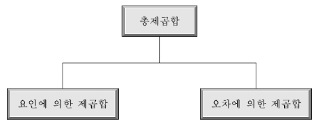
특성값의 변동을 나타내는 제곱합(총제곱합, total sum of squares: SST)은 요인에 의한 제곱합(treatment sum of squares: SSTr)과 오차로 인한 제곱합(error sum of squares: SSE)으로 분해
2.2 일원배치 분산분석
일원배치 분산분석(one-way ANOVA)석은 \(t\)-test를 확장하여 요인은 하나이고, 요인에 의해 \(k\)개 집단(수준)으로 나뉜 표본들을 서로 비교 검정하는 방법
집단(수준)은 3개 이상(\(k \ge 3\)), 특성값은 하나로써 특성값에 대한 한 종류의 요인만의 영향을 조사하고자 할 때 사용하는 방법
특성
집단 수와 각 집단에서 취해지는 측정값의 반복수에는 별로 제한이 없음. 그러나 집단수는 \(3\sim 5\)수준, 반복수는 \(3\sim 10\) 정도가 많이 사용됨
반복수가 모든 수준에 대하여 같지 않아도 됨. 따라서 결측값(missing value)이 있어도 이를 추정하여 넣어 줄 필요가 없으며 그대로 해석 가능 함
실험의 측정은 실험 전체를 완전히 랜덤화하여 모든 특성값을 랜덤한 순서에 의하여 구해야 함
요인 \(A\)의 수준(집단)수가 \(k\)개(\(A_1, A_2, \cdots, A_k\))이며, 각 수준마다 \(n_i\)번씩 반복 실험을 할 경우, 일원배치 분산분석을 위한 자료 형태. 여기서 \(N=\sum_{i=1}^kn_i\)은 총 실험횟수
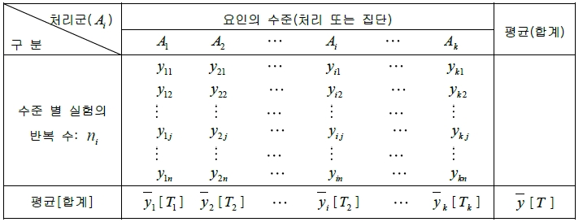
여기서 \(i\)열의 합 \(T_i=\sum_{j=1}^{n_i} y_{ij}\), \(i\)열의 평균 \(\bar{y}_i=\frac{T_i}{n_i}\), 총 합계 \(T=\sum_{i=1}^k T_i\), 총 평균 \(\bar{y}=\frac{T}{N}\)
일원배치 분산분석 - 통계적 모형 \[\begin{aligned} y_{ij}&=&\mu_i + \epsilon_{ij}, \quad i=1,2,\ldots,k, \quad j=1,2,\ldots,n_i \\ &=&\mu + \alpha_i + \epsilon_{ij} \end{aligned}\]
\(\epsilon_{ij} \sim N(0, \sigma^2)\), 서로 독립
\(\mu\): 실험전체의 모평균
\(\alpha_i\): \(i\)번째 처리가 주는 주효과. 단, \(\sum_{i=1}^k\alpha_i=0\)
\(\epsilon_{ij}\): \(i\)번째 처리의 \(j\)번째 반복에서 얻은 측정값의 오차
오차 \(\epsilon_{ij}\)는 처리 \(A_i\)에서 \(j\)번째 측정된 \(y_{ij}\)가 수반하는 오차로서, 확률변수이며 다음과 같은 성질을 가짐
\(\epsilon_{ij}\)는 랜덤하게 변하는 값이며 모평균은 \(0\)이고 분산은 \(\sigma^2\)이다.
\(\epsilon_{ij}\)는 정규분포 \(N(0,\sigma^2)\)으로부터 확률추출된 것이라고 가정하며, 이 가정은 다음을 의미한다.
정규성: 오차 \(\epsilon_{ij}\)는 정규분포를 따른다.
독립성: 임의의 \(\epsilon_{ij}\)와 \(\epsilon_{i'j'}\)(\(i\ne i'\) 또는 \(j\ne j'\))는 서로 독립이다.
불편성: 오차 \(\epsilon_{ij}\)의 기대값은 \(0\)이다.
등분산성: 오차 \(\epsilon_{ij}\)의 분산은 \(\sigma^2\)으로 어떤 \(i, j\)에 대해서도 일정하다.
분산분석을 하려면 오차항의 가정에 따라 먼저 집단간의 분산이 동질함을 검정하여야 함. 이를 위해 Levene의 분산의 동질성 검정(Levene’s equality of variances test)을 이용
귀무가설: \(H_0\): \(\sigma_1^2=\sigma_2^2=\cdots =\sigma_k^2\)(\(k\)개 집단의 분산은 동일하다).
대립가설: \(H_1\): 최소한 하나의 \(\sigma_i^2\)은 다르다.
검정통계량: \[F=\frac{(N-k)\sum_{i=1}^k n_i(\bar{z}_i-\bar{z})^2}{(k-1)\sum_{i=1}^k\sum_{j=1}^{n_i}(z_{ij}-\bar{z}_i)^2}\]
여기서 \(z_{ij}=|y_{ij}-\bar{y}_i|\).
기각역: \[F>F(k-1,N-k;\alpha)\]
등분산이 가정되지 않는 경우 Brown-Forsythe 통계량을 계산하여 집단 평균의 동일성을 검정
평균에 대한 가설
귀무가설: \(H_0\): \(\mu_1 = \mu_2 = \cdots = \mu_k\) 또는 \(\alpha_1=\alpha_2=\cdots=\alpha_k=0\).
대립가설: \(H_1\): 최소한 하나의 \(\mu_i\)는 같지 않다. 또는 최소한 하나의 \(\alpha_i=0\)이 아니다.
분산분석의 가설검정은 분산분석표(ANOVA table)를 통해 이루어짐
분산분석표

변동 분해
총제곱합 \(SST(S_T)=\sum_{i=1}^k\sum_{j=1}^{n_i}(y_{ij}-\bar{y})^2\)
오차제곱합 \(SSE(S_E)=\sum_{i=1}^k\sum_{j=1}^{n_i} (y_{ij}-\bar{y}_i)^2\)
처리제곱합 \(SSTr(S_A)=\sum_{i=1}^k\sum_{j=1}^{n_i}(\bar{y}_i-\bar{y})^2\)
총제곱합 \(SST\)는 급내변동(variation within group)인 오차제곱합 \(SSE\)와 급간변동(variation between group)인 처리제곱합 \(SSTr\)의 합으로 구성됨. 즉, \[SST=SSE + SSTr\]
변동의 자유도
총변동의 자유도 \(\phi_T=N-1\)
급내변동의 자유도 \(\phi_E=N-k\)
급간변동의 자유도 \(\phi_A=k-1\)
평균제곱: 제곱합을 자유도로 나눈 것
오차평균제곱(mean squared error: MSE): \(V_E=\frac{S_E}{\phi_E}\)
처리평균제곱: \(V_A=\frac{S_A}{\phi_A}\)
검정통계량 \[F=\frac{V_A}{V_E} \sim F_{(k-1,N-k)}\]
기각역 \[F \ge F_{(\alpha,k-1,N-k)}\]
2.2.1 사후분석(다중검정)
분산분석은 \(k\)개 집단의 평균이 유의미한 차이가 있는지 확인만 가능
즉, \(k\)개의 집단 중 하나의 집단이 다른 집단의 평균과 차이가 있는지 아니면 여러 집단이 동시에 서로서로 차이가 있는지 확인 불가능
분산분석의 결과가 유의미한 경우, 다시 말해서 최소한 하나 이상의 집단의 평균이 차이가 있다고 나타난 경우, 차이가 있는 집단을 찾는 방법을 사후분석(post hoc analysis) 또는 다중검정(multiple comparison)이라고 함
사후검정 또는 다중검정은 반드시 분산분석의 결과가 유의미한 경우에 이루어져야 함
사후 검정은 두 집단씩 짝을 이루어 검정하게 되며(마치 \(t\)-test 처럼) 이때 제1종 오류의 크기 \(\alpha\)를 유지하는 방법에 따라 여러가지 방법으로 나누어짐

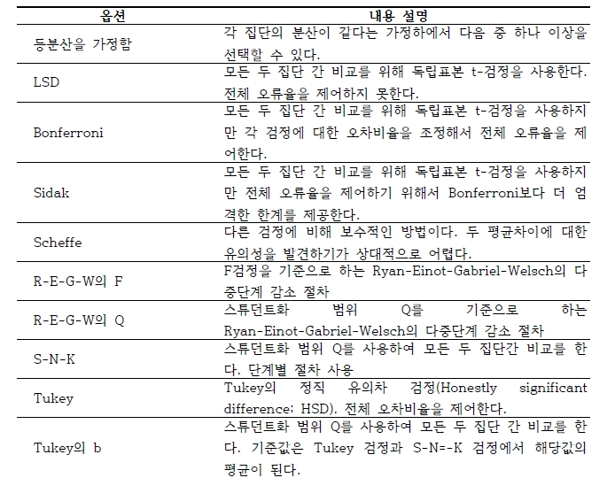
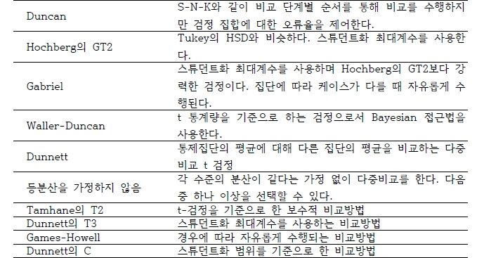
면역이상에 대한 한 연구에서 자폐아, 정상아, 지진아에 대한 혈청 항원의 농도에 대해 조사하였다. 이 연구의 목적은 자폐아, 정상아, 지진아에 따라 혈청 항원의 농도에 유의한 차이가 있는가이다.
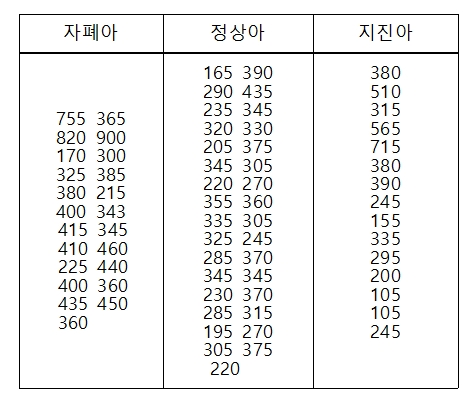
풀이) \[SST=\sum_i \sum_j (y_{ij} -\bar{y} )^2 = 1517167.239\] \[SSt=\sum_i n_i (\bar{y}_i - \bar{y} )^2 =141234.602\] \[SSE=SST-SSt =1375932.638\] \[F=\frac{141234.602/2}{1375932.638/68}=3.47\]
ANOVA table
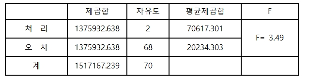
가설
\(H_0\): 자폐아, 정상아, 지진아에 대한 혈청 항원의 농도는 모두 같다
\(H_1\): Not \(H_0\)
임계값 \[F_{0.05}(2,68) = 3.15\]
기각역 \[F_0 > 3.15\]
검정통계량 값이 \(3.49>3.15\)로 유의수준 \(5\%\) 하에서 귀무가설 기각. 따라서 세 집단의 평균이 모두 동일하지는 않음
\(P\)-value \[P(F>3.49)=0.0361\]
\(P\)-value의 값이 유의수준 0.05보다 작으므로 귀무가설 기각
다음은 서로 다른 항우울제의 치료 효과를 비교하기 위한 연구이다. \(36\)명의 우울증 환자를 \(A\)군, \(B\)군, \(C\)군으로 \(12\)명씩 무작위 배정하여 각각 \(A\)약, \(B\)약, \(C\)약을 2개월 동안 투여한 뒤 우울증 점수를 측정하였다. 이 세가지 약의 치료 효과를 비교하라.
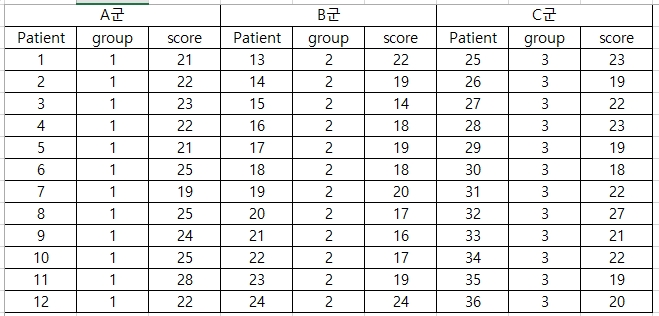
SAS Code
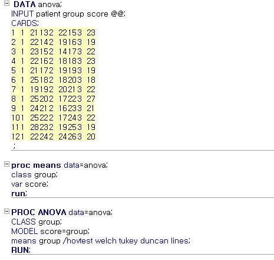

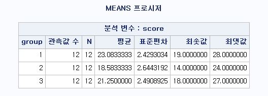

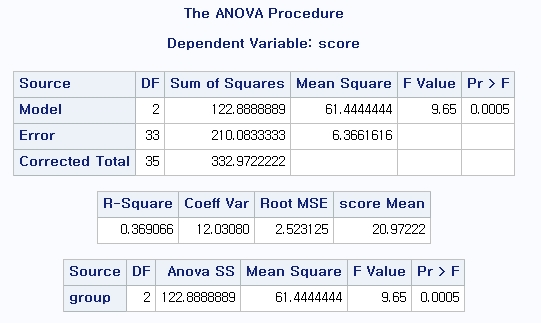

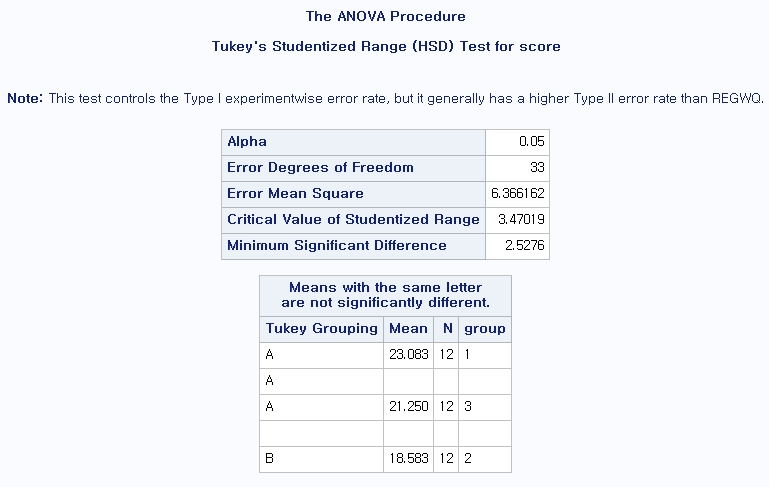
2.3 이원배치 분산분석
이원배치 분산분석(two-way ANOVA)은 특성값에 영향을 미치는 두 요인의 효과에 대하여 조사하고자 할 때 이용되는 방법
이원배치 분산분석은 각 처리수준 조합내에서 반복이 있는 경우와 반복이 없는 경우로 나누어지며, 여기서는 반복이 있는 경우를 살펴봄
이원배치 분산분석 개요
등분산 검정
교호작용 효과(interaction effect) 검정
교호작용이 없다면 주효과(main effect) 검정
교호작용이 있다면 교호작용을 반영한 교차 검정
요인 \(A\)의 수준(집단)수가 \(a\), 요인 \(B\)의 수준이 \(b\)라고 하고 각 수준 조합에서 \(n\)번씩 반복 실험을 할 경우, 이원배치 분산분석을 위한 자료 형태

이원배치 분산분석 - 통계적 모형 \[\begin{aligned} y_{ijk}&=&\mu_{ij} + \epsilon_{ijk}, \quad i=1,2,\ldots,a, \quad j=1,2,\ldots,b, \quad k=1,2,\ldots,n \\ &=&\mu + \alpha_i + \beta_j + (\alpha\beta)_{ij}+\epsilon_{ijk} \end{aligned}\]
\(\epsilon_{ijk} \sim N(0, \sigma^2)\), 서로 독립
\(\mu\): 실험전체의 모평균
\(\alpha_i\): 요인 \(A\)의 \(i\)번째 처리가 주는 주효과
\(\beta_j\): 요인 \(B\)의 \(j\)번째 처리가 주는 주효과
(\(\alpha\beta)_{ij}\): 요인 \(A\)의 \(i\)번째 처리와 요인 \(B\)의 \(j\)번째 처리의 교호작용 효과
\(\epsilon_{ijk}\): 요인 \(A\)의 \(i\)번째 처리와 요인 \(B\)의 \(j\)번째 처리 내 \(k\)번째 반복에서 얻은 측정값의 오차
분산분석을 하려면 오차항의 가정에 따라 먼저 집단간의 분산이 동질함을 검정하여야 함. 이를 위해 Levene의 분산의 동질성 검정(Levene’s equality of variances test)을 이용
귀무가설: \(H_0\): \(\sigma_{11}^2=\sigma_{12}^2=\cdots =\sigma_{ij}^2\)(\(i,j\) 집단의 분산은 동일하다).
대립가설: \(H_1\): 최소한 하나의 \(\sigma_{ij}^2\)은 다르다.
검정통계량: \[F=\frac{ab(n-1)\sum_{i=1}^a\sum_{j=1}^b n(\bar{z}_{ij}-\bar{z})^2}{(ab-1)\sum_{i=1}^a\sum_{j=1}^{b}\sum_{k=1}^n(z_{ijk}-\bar{z}_{ij})^2}\]
여기서 \(z_{ijk}=|y_{ijk}-\bar{y}_{ij}|\).
기각역: \[F>F(ab-1,ab(n-1);\alpha)\]
등분산이 가정되지 않는 경우 비모수(nonparameteric) 검정법을 이용함
평균에 대한 가설
귀무가설1: \(\alpha_1=\alpha_2=\cdots=\alpha_a=0\)
귀무가설2: \(\beta_1=\beta_2=\cdots=\beta_b=0\)
귀무가설3: \(\alpha\beta_{11}=\alpha\beta_{12}=\cdots=\alpha\beta_{ij}=0\)
대립가설: \(H_1\): Not \(H_0\)
분산분석표

변동 분해
\(SST=\sum_i\sum_j\sum_k (y_{ijk}-\bar{y})^2\)
\(SSA=bn\sum_i(\bar{y}_{i.}-\bar{y})^2\)
\(SSB=an\sum_j(\bar{y}_{.j}-\bar{y})^2\)
\(SSAB=n\sum_i\sum_j(\bar{y}_{ij}-\bar{y}_{i.}-\bar{y}_{.j}+\bar{y})^2\)
\(SSE(S_E)=\sum_i\sum_j\sum_k (y_{ijk}-\bar{y}_{ij})^2\)
총제곱합 \(SST\)는 \(A\)요인 수준간의 변동 \(SSA\), \(B\)요인 수준간의 변동 \(SSB\)와 요인 \(A,B\)의 교호작용에 의한 변동 \(SSAB\), 집단내의 변동 \(SSE\)로 분해하여 얻어짐. 즉, \[SST=SSA + SSB+SSAB+SSE\]
변동의 자유도
\(SST\): \(abn-1\)
\(SSA\): \(a-1\), \(SSB\): \(b-1\)
\(SSAB\): \((a-1)(b-1)\), \(SSE\): \(ab(n-1)\)
평균제곱
\(MSA\): \(SSA/(a-1)\)
\(MSB\): \(SSB/(b-1)\)
\(MSAB\): \(SSAB/((a-1)(b-1))\)
\(MSE\): \(SSE/(ab(n-1))\)
검정통계량 \[F_1=\frac{MSA}{MSE} \sim F_{(a-1,ab(n-1))}\] \[F_2=\frac{MSB}{MSB} \sim F_{(b-1,ab(n-1))}\] \[F_3=\frac{MSAB}{MSE} \sim F_{((a-1)(b-1),ab(n-1))}\]
2.3.1 교호작용
만약 요인 \(A\)의 효과가 요인 \(B\)의 수준에 따라 다르게 나타날 때(혹은 요인 \(B\)의 효과가 요인 \(A\)의 수준에 따라 다르게 나타날 때) 두 요인간에 교호작용(상호작용, interaction)이 있음
교호작용 예

이원배치 분산분석 검정 순서
교호작용이 유의한지 검정
만약, 교호작용이 유의하다면, 그대로 해석하고 분석 종료
혹은 두 요인의 수준을 조합하여 새로운 변수를 생성 후 일원배치 분산분석 시행
만약, 교호작용이 유의하지 않다면, 모형에서 교호작용 항을 제거하고 다시 분석
세 종류의 호르몬 처리와 성별에 따라 혈액 칼슘 값에 차이가 있는지를 알아보기 위해 남녀 각 \(15\)명씩을 선정하여 이들을 세 그룹으로 나누어 세 가지 호르몬 처리를 한 후 혈액 칼슘을 측정하였다. 호르몬 처리 및 성별에 따라 혈액 칼슘 값이 차이가 있는지 검정하라.

SAS Code
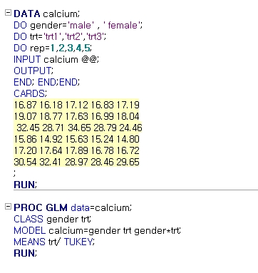
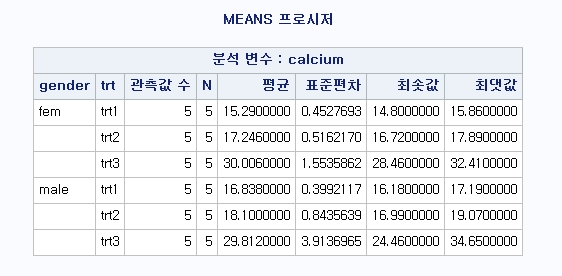

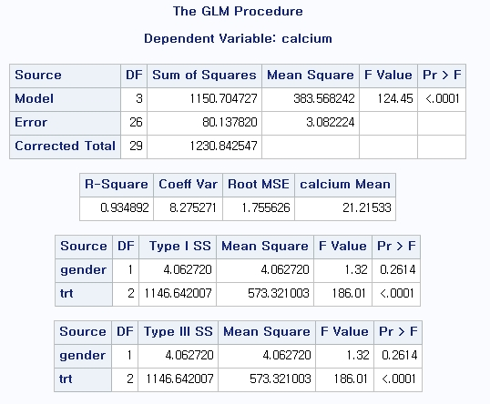
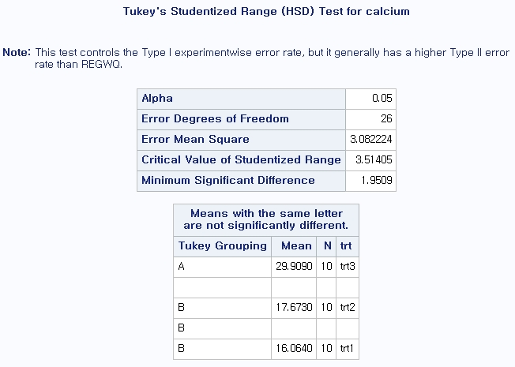